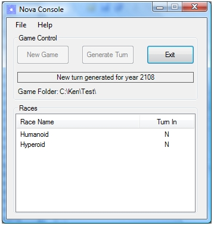

Nova Console
This is the main console or server program. It only has two functions: Generate
a fresh new game and generate the turns for each subsequent year. The console program
generates a single "turn file" which is distributed to all game players. This file
is read by the Nova GUI program to allow each player to see the state of
the game.
Each player generates his turn for the next year which are all gathered into a single
place where the console program uses them to generate the turn for the next year.
Consequently, having only two functions, the program appears very simple to the
user but it actually contains most of the "guts" behind the game play. Here is
a screen shot:

When a new game is started there is the expected dialog to define the victory conditions: